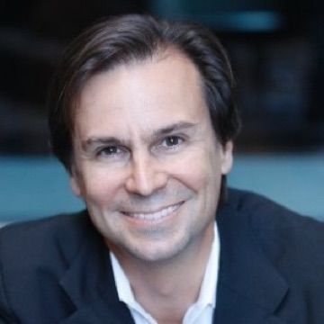
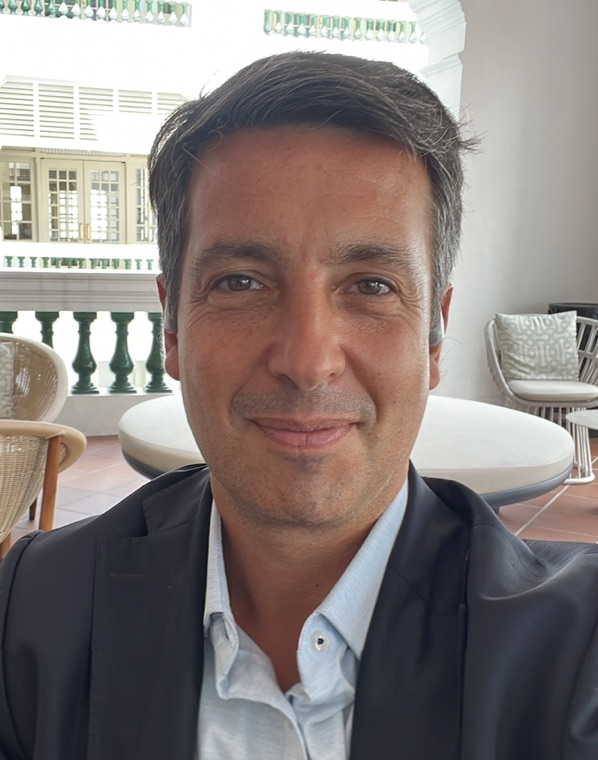

A network of networks, built around Total Net Worth.
Visionary is a human concierge layer on top of the Access-X network. It helps you manage and monetize your own relationships, exchange referrals across networks, and gain on-demand access to business, wealth and lifestyle opportunities for influential and affluent individuals.
A consortium of companies.
One trusted network.
Each company introduces itself here and links to its own site.

An automated agent that connects people and opportunities across networks.
Explore → 02RCM
Relationship Capital Management: a CRM with automation and a referral exchange.
Explore → 03Family Offices
A 360-degree approach that matches private wealth to the right solutions.
Explore → 04Media
Corporate content, interviews and episodic series.
Explore →The engine sits inside the system.
Family Offices
Brings the network to families and private wealth.
RCM
Your relationships, organized and automated.
A matching engine and arranged-meeting agent. It works inside your own trust network, across RCM trust networks and across invite-only networks.
Media
Brings the network's people and ideas to an audience.
Successful matches,
in their own words.
A sample from a much broader record of successful outcomes, spanning every kind of capital, investment opportunities, business development, key hires and arranged meetings.
“Visionary sourced us a loan within days of indicating our need for working capital.”

“Visionary took the time to understand my overlapping interests in real estate and early stage technology investing. They then presented me a building operations technology company and I participated in their seed round of financing.”

“Visionary engaged me for consulting services and during that time I worked with various Members in the network, including a private equity fund, which then hired me full time as their COO.”

Alex Salzman
Network theorist, technologist and entrepreneur. His work on Total Net Worth, and on health and wealth, gave rise to the Visionary ecosystem.
Meet the founder →1.0 to today


It started as the Visionary Access Network, offering introductions and business development as a service. Behind the gatherings, the team built a matching engine and a business model around the one-on-one, double opt-in meeting. It has grown into a consortium of companies.